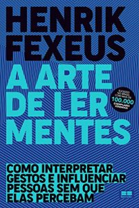
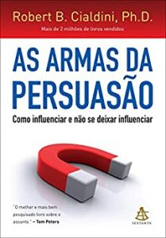

Veja 9 livros para melhorar a comunicação
Como anda a sua comunicação? Confira a lista com livros que vão ajudar a você a utilizar essa ferramenta tão importante em nosso cotidiano
A comunicação é um elemento fundamental no exercício da vida cotidiana. Além de mediar as relações interpessoais, no âmbito profissional, ela atua como uma ferramenta eficaz na garantia de bons resultados e no fortalecimento das interações de trabalho nos mais diferentes níveis e contextos de uma empresa.
O controle da comunicação permite que as ideias sejam conduzidas aos ouvintes, sejam eles chefes, clientes ou colegas de trabalho, de maneira clara e compreensível. Com o domínio das expressões verbais e também das expressões corporais, você será capaz de expor melhor as suas percepções e aprimorar a sua capacidade de argumentação na hora de defender um projeto.
Quer aprender a se comunicar melhor? Então, confira a lista de livros que nós preparamos especialmente para você. Boa leitura!
A Arte de Ler Mentes, Henrik Fexeus
Em A Arte de Ler Mentes, Henrik Fexeus revela de que maneira é possível relacionar a linguagem corporal com as características pessoais de cada um, influenciar pessoas e ler os seus pensamentos. Na obra, Fexeus oferece exercícios fáceis que ensinam como identificar os pensamentos de uma pessoa através de diferentes estratégias e sinais corporais.
 Ver livrosAs Armas da Persuasão, Robert Cialdini
Em As Armas da Persuasão,Robert Cialdini reúne dados de recentes pesquisas científicas, além de histórias pessoais e a sua experiência em organizações e empresas para explicar de que maneira é possível influenciar pessoas, sem deixar de se defender dos manipuladores.
 Ver livrosA Coragem de Ser Imperfeito, Brené Brown
A coragem de ser imperfeito é resultado de uma pesquisa pioneira sobre a vulnerabilidade humana na sociedade contemporânea. No livro, Brené Brown apresenta dados a respeito de suas descobertas científicas, reflete sobre questões delicadas do cotidiano e desafia os leitores a transformarem a maneira como vivem e se relacionam.
Ver livrosComo Fazer Amigos e Influenciar Pessoas, Dale Carnegie
O famoso livro de Dale Carnegie é um ótimo guia para quem quer aprender a se relacionar melhor no âmbito profissional ou no âmbito pessoal. Na obra, o autor oferece conselhos, dicas e métodos eficientes para que qualquer um possa alcançar os seus objetivos pessoais e profissionais.
Ver livrosE aí, gostou da lista?